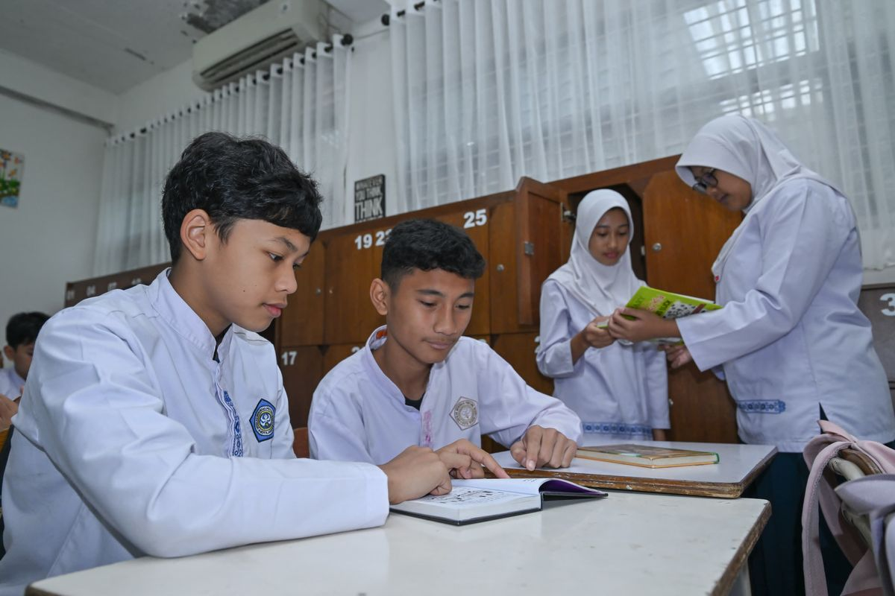

KOMPAS.com - Kementerian Pendidikan Dasar dan Menengah (Kemendikdasmen) telah membahas sejak lama mengenai rencana pembaruan buku cetak pelajaran SD hingga SMA. Kepala Badan Kebijakan Pendidikan Dasar dan Menengah Kemendikdasmen Toni Toharudin mengatakan, pembahasan itu sudah dilakukan jauh sebelum ada arahan dari Presiden Prabowo Subianto.
"Sebetulnya proses pembaruan buku ini sudah berjalan dan bukan baru dimulai setelah Bapak Presiden menyampaikan perlunya evaluasi," kata Toni kepada Kompas.com, Rabu (12/8/2026).
Proses pembaruan buku telah mencapai sekitar 50 persen
Toni mengatakan, proses pembaruan buku bahkan telah mencapai sekitar 50 persen dan dengan ada arahan dari Presiden Prabowo Subianto langkah permbaruan bisa semakin cepat.
Ia juga menegaskan, proses pembaruan buku ini tidak hanya bertumpu pada aspek fisik tetapi juga memperkuat subtansi agar selaras dengan kebijakan nasional.
"Kami sekarang sedang fokus di Komite 3 DGB untuk mengkaji masalah-masalah yang sedang berkembang, yang terkini, yang banyak dibahas dan menjadi isu publik," ungkapnya.
"Arahan Bapak Presiden justru semakin menegaskan dan memperkuat bahwa buku pelajaran harus terus kita evaluasi agar sesuai dengan kebutuhan pendidikan dan arah pembangunan sumber daya manusia Indonesia ke depan," ujarnya. Toni juga menambahkan, pihaknya juga sudah selesai melakukan evaluasi terhadap buku yang digunakan dan beberapa bagian substansinya telah diperkuat agar selaras kebijakan nasional.